Техника высоких напряжений
Лекция 11
PRPD-диаграммы и диагностика изоляции
Как строится фазовое распределение частичных разрядов, как его читать и какие решения по нему принимают
Цель лекции. Научить строить и читать PRPD-диаграммы (phase-resolved partial discharge — фазовое распределение ЧР), узнавать по ним тип дефекта, отличать ЧР от помех и принимать инженерные решения по результатам измерений и онлайн-мониторинга. Учебные вопросы. 1) Почему важна фаза. 2) Как строится PRPD. 3) Фазовые гистограммы и числовые признаки. 4) Физика формы картины для поры. 5) Галерея типовых картин. 6) Алгоритм чтения. 7) Ловушки: синхронизация, помехи, несколько источников. 8) Диагностика по видам оборудования. 9) Тренды и решения. Связанные материалы. Интерактив «ЧР и PRPD»: вкладки 1 «Пора в изоляции» (как рождаются точки диаграммы), 2 «PRPD-лаборатория» (библиотека дефектов), 4 «Диагност» (8 случаев с объектов). Перед лекцией — лекция 10. |
1. Почему важна фаза
Из лекции 10: разряд в поре происходит, когда напряжение на ней достигает пробивного, а это зависит от мгновенного значения испытательного напряжения и от зарядов, оставшихся от прошлых разрядов. Поэтому у каждого дефекта есть «своё время» внутри периода 50 Гц: пора разряжается на подъёмах полуволн, корона — у пика, помеха от выпрямителя — в фиксированные моменты коммутации.
Если записывать для каждого импульса не только заряд, но и фазу испытательного напряжения, то за сотни периодов складывается картина, по форме которой узнают тип источника. Это и есть PRPD-диаграмма. Её используют все современные приборы ЧР — от лабораторных до систем онлайн-мониторинга генераторов.
2. Как строится PRPD-диаграмма
Алгоритм прибора:
От испытательного напряжения берут сигнал синхронизации; момент перехода через ноль снизу вверх — фаза 0°.
Для каждого импульса ЧР выше порога записывают пару (φi, qi): фазу в градусах и кажущийся заряд со знаком (полярность импульса).
Точки за N периодов наносят на одну плоскость: по горизонтали фаза 0–360°, по вертикали заряд. Для ориентира рисуют синусоиду испытательного напряжения.
Чтобы видеть плотность, плоскость делят на клетки (например 90×60) и раскрашивают по числу импульсов в каждой — получают карту φ–q–n.
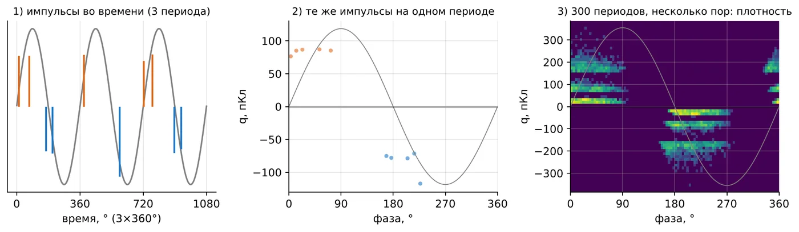
Рис. 1. Построение PRPD: импульсы во времени → один период → накопление за 300 периодов
В интерактиве. Во вкладке 1 видно, как рождаются точки: каждый разряд на осциллографе ставит точку на PRPD ниже, и за десятки периодов складываются облака.

Рис. 2. Интерактив, вкладка 1: разряды на осциллографе и накопленная из них PRPD
Сколько периодов накапливать? Для устойчивой картины — сотни–тысячи (секунды–минуты). Слишком мало — картина «рваная»; слишком много при меняющемся режиме — смешиваются разные состояния. Порог отображения ставят выше уровня шума, иначе вся плоскость покрывается «травой».
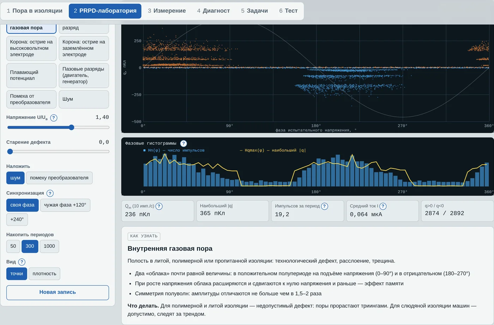
Рис. 3. PRPD-лаборатория интерактива: точки, гистограммы, числовые признаки
3. Фазовые гистограммы и числовые признаки
Из облака точек получают распределения по фазе (интервалы по 5°):
| Распределение | Что показывает |
|---|---|
| Hn(φ) | Число импульсов в каждом интервале фазы — где разряды происходят |
| Hqmax(φ) | Наибольший заряд в интервале — где самые крупные разряды |
| Hqn(φ) | Средний заряд в интервале |
| H(q) | Распределение импульсов по величине: широкое у поры, узкое у короны и плавающего потенциала |
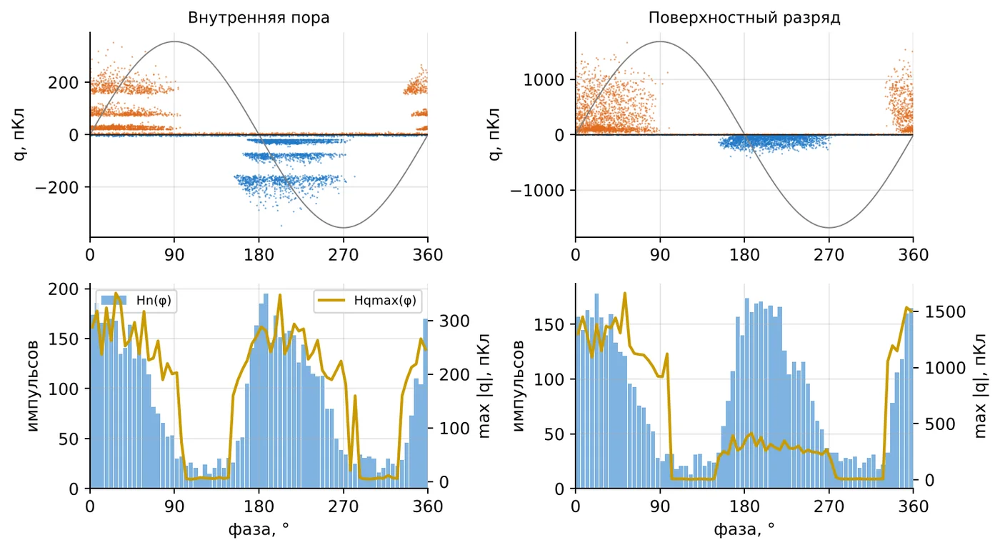
Рис. 4. Фазовые гистограммы поры и поверхностного разряда
В интерактиве. В PRPD-лаборатории (вкладка 2) гистограммы строятся под картиной автоматически. Переключите источник с поры на поверхностный разряд и сравните высоту жёлтой линии Hqmax в двух полуволнах.
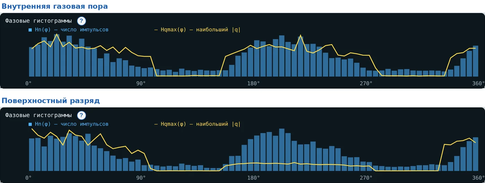
Рис. 5. Интерактив, вкладка 2: фазовые гистограммы поры и поверхностного разряда при U = 1,4Uв
Числовые признаки, которые используют в протоколах и системах распознавания:
Qm — величина импульсов, повторяющихся 10 раз в секунду (МЭК/TS 60034-27). При T секундах наблюдения импульсы сортируют по убыванию модуля и берут импульс с номером 10·T.
Асимметрия полуволн: отношение Qm (или среднего заряда) отрицательной полуволны к положительной; для поры близко к 1, для поверхностных и пазовых разрядов — 2 и более.
Фаза начала и ширина облака — сдвиг к нулю напряжения растёт с напряжением и с эффектом памяти.
n — импульсов в секунду или за период; I — средний ток ЧР.
4. Почему картина поры выглядит именно так
Всё следует из процесса, разобранного в лекции 10 (раздел 5):
Разряды возможны, только пока напряжение на поре растёт по модулю → облака на подъёмах полуволн: 0–90° и 180–270°.
Положительные импульсы — в положительной полуволне, отрицательные — в отрицательной; механизм одинаков → облака почти симметричны.
Эффект памяти → при росте напряжения облака расширяются влево и начинаются раньше нуля напряжения (например, с 330° и 150°).
В реальной изоляции много пор разного размера → облако состоит из нескольких «полос»: у каждой поры свой ΔU, а значит, свой заряд.
Статистическое запаздывание → разброс по величине и фазе, характерные «заячьи уши» на передних краях облаков у крупных пор.
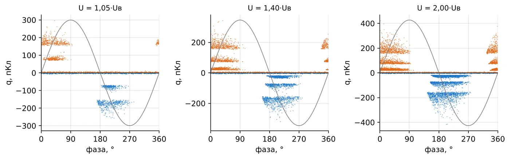
Рис. 6. Картина поры при росте напряжения: 1,05; 1,4 и 2Uв
В интерактиве. То же во вкладке 2: двигайте ползунок «Напряжение U/Uв» и смотрите, как облака растут и сдвигаются к нулю.
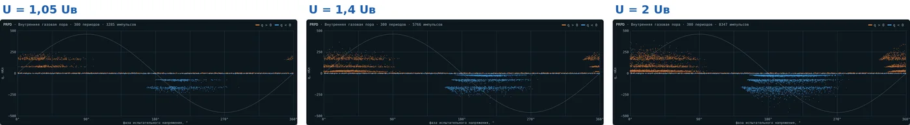
Рис. 7. Интерактив, вкладка 2: внутренняя пора при 1,05; 1,4 и 2Uв
Старение поры меняет картину: стенки становятся проводящими, разряды переходят в «роение» — много мелких импульсов. Величина падает, но опасность не исчезает: продукты разрядов уже разрушают изоляцию. Поэтому снижение Qm не всегда хорошая новость — смотрят на всю картину и тренд.
5. Галерея типовых картин
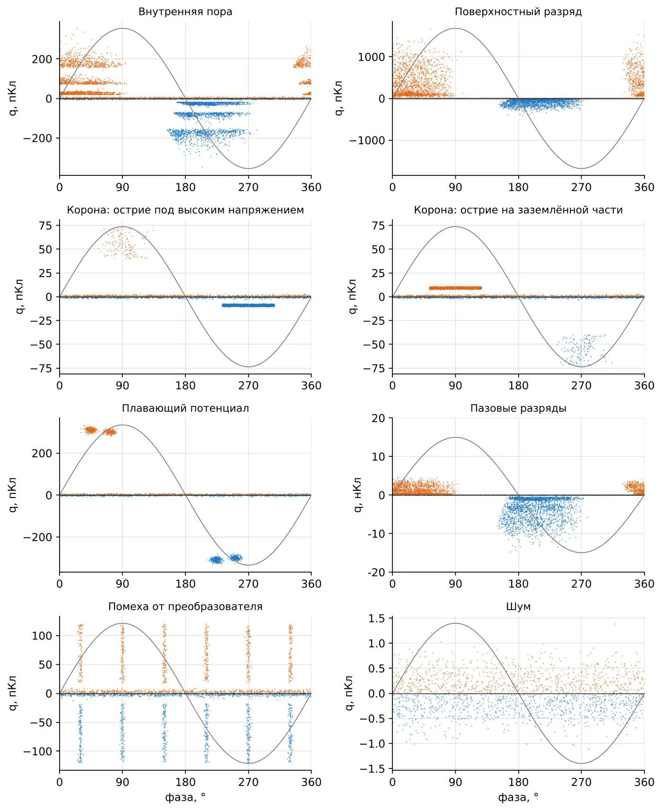
Рис. 8. Типовые PRPD-картины (модель интерактива, вкладка 2)
В интерактиве. Каждую картину галереи можно получить во вкладке 2 кнопкой «Источник ЧР» и рассмотреть вблизи: ниже — четыре источника так, как их видит студент.
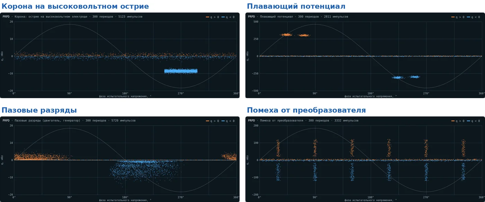
Рис. 9. Интерактив, вкладка 2: корона, плавающий потенциал, пазовые разряды и помеха
| Источник | Признаки на PRPD | Решение |
|---|---|---|
| Внутренняя пора | Два почти симметричных облака на подъёмах полуволн (0–90°, 180–270°); с ростом U сдвигаются к нулю и раньше | Литая и полимерная изоляция — брак; слюда — наблюдение за трендом |
| Поверхностный разряд | Асимметрия: облако одной полуволны крупнее и шире; растянуто на 100–120°; зависит от влажности | Очистка, сушка, проверка края экрана и противокоронного покрытия |
| Корона на острие под высоким напряжением | Сначала мелкие одинаковые импульсы у отрицательного пика (≈ 270°); при большем U — редкие крупные у положительного пика (≈ 90°) | Найти и скруглить острую кромку; для твёрдой изоляции не опасна, но маскирует дефекты |
| Корона на заземлённом острие | Зеркально: мелкие одинаковые у ≈ 90°, крупные у ≈ 270° | Найти острие на заземлённых частях (часто в схеме испытания) |
| Плавающий потенциал | Мало крупных импульсов почти одинаковой величины — горизонтальные полосы; слабо зависят от U | Восстановить контакт или заземлить деталь; опасно в масле |
| Пазовые разряды | Крупные импульсы, сильная асимметрия (≥ 2 раз), широкие облака, быстрый рост во времени | Проверка заклиновки и полупроводящего покрытия паза |
| Помеха от преобразователя | Вертикальные столбики в фиксированных фазах (6 за период у шестипульсного выпрямителя); есть без напряжения | Не ЧР: стробирование, фильтры, проверка при снятом напряжении |
| Шум | Равномерная «трава» по всей фазе, малая амплитуда | Порог отображения выше шума; экранирование, заземление |
| О полярности асимметрии. Какая полуволна крупнее у пазовых разрядов и у разрядов на проводнике, зависит ещё и от того, как прибор определяет полярность импульса. Поэтому направление асимметрии сверяют с методикой конкретного прибора и стандартом МЭК/TS 60034-27-1, а на лекции главным признаком считают сам факт сильной асимметрии. |
6. Алгоритм чтения PRPD
Опытный диагност проходит по картине в определённом порядке. Этот порядок стоит выучить как чек-лист:
Проверить синхронизацию. Откуда взят сигнал фазы? Если от другой фазы трёхфазной сети — картина сдвинута на 120° или 240°.
Проверить фон. Есть ли картина при снятом напряжении? Всё, что есть без напряжения, — помехи.
Отделить шум. Поставить порог отображения выше равномерной «травы».
Найти облака относительно синусоиды. На подъёмах полуволн — пора, поверхность, паз; у пиков — корона; в фиксированных фазах столбиками — помеха.
Сравнить полуволны. Симметрия — внутренние разряды; асимметрия — поверхность, паз, корона.
Оценить разброс величины. Широкий — поры, поверхность; узкий (одинаковые импульсы) — корона, плавающий потенциал.
Изменить напряжение. Как ведёт себя картина: растёт ли число импульсов, сдвигается ли фаза, растёт ли величина? Плавающий потенциал почти не меняется, корона резко меняется при переходе через порог положительной короны.
Сравнить с прошлым. Тренд Qm и форма картины во времени важнее одного измерения.
Несколько источников сразу
На реальном объекте картины часто накладываются: поры плюс корона в схеме плюс помехи. Для разделения используют: стробирование по фазе и времени, разные датчики и полосы частот, сравнение амплитуд одного импульса в трёх фазах (диаграмма 3PARD), классификацию по форме импульса. На занятии достаточно уметь увидеть, что источников больше одного, и проверить каждый признак по отдельности.
7. Ловушки при чтении
7.1. Чужая синхронизация
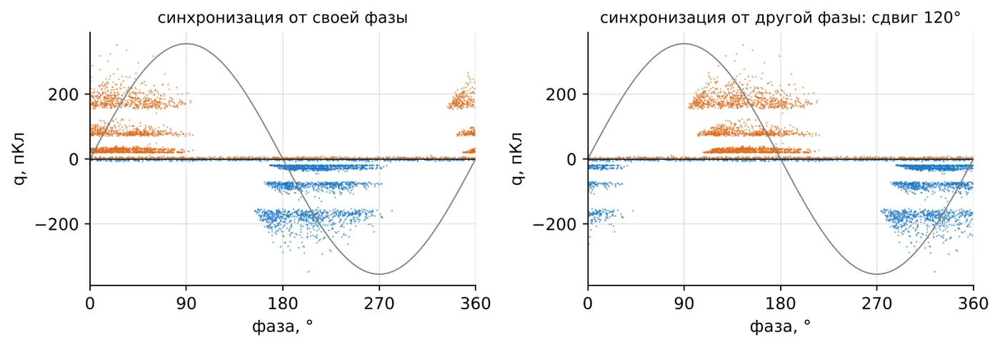
Рис. 10. Одна и та же пора при синхронизации от своей и от другой фазы сети
В интерактиве. Во вкладке 2 это переключатель «Синхронизация»: своя фаза, +120°, +240°. На нём же построен случай 3 игры «Расследование».
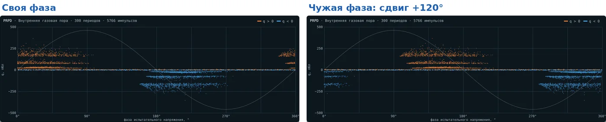
Рис. 11. Интерактив, вкладка 2: одна и та же пора при своей и чужой синхронизации
Сдвиг на 120° превращает картину поры в нечто похожее на корону или поверхностный разряд. Это самая частая ошибка на объекте: синхронизацию берут от трансформатора напряжения другой фазы или от розетки. Перед чтением диаграммы всегда записывают, откуда взята фаза.
7.2. Помехи
Тиристорные выпрямители, преобразователи частоты, сварка, коронирующие провода соседних присоединений дают импульсы, которые прибор честно рисует на PRPD. Главный тест: снять испытательное напряжение. ЧР исчезнут, помехи останутся. Синхронные с сетью помехи стоят столбиками в одних и тех же фазах; несинхронные — равномерно.
7.3. Питание от преобразователя частоты
У двигателя, питаемого от ПЧ (вариант 1 расчётного задания), на изоляцию действуют не только 50 Гц, но и крутые фронты ШИМ. ЧР возникают на фронтах импульсов, а не на синусоиде, и классическая PRPD по фазе основной гармоники теряет смысл. Такие машины испытывают импульсным напряжением (МЭК 60034-18-41), а при онлайн-измерении помехи от ключей ПЧ подавляют измерением в ОВЧ/УВЧ-диапазоне.
8. Диагностика по видам оборудования
| Оборудование | Как измеряют | На что смотрят |
|---|---|---|
| Кабели с изоляцией из сшитого полиэтилена | Офлайн: VLF 0,1 Гц или колебательное напряжение; онлайн: HFCT на заземлении экранов | Муфты и концевые заделки; локализация по отражению; норма — единицы–десятки пКл |
| Генераторы и двигатели 6–20 кВ | Онлайн: конденсаторы 80 пФ на выводах; офлайн: испытательный трансформатор | Тренд Qm, асимметрия (пазовые разряды, расслоение), сравнение фаз и однотипных машин |
| Силовые трансформаторы | Электрический метод на вводах, акустика на баке, газы в масле | Водород в масле, акустическая локация, плавающие потенциалы |
| КРУ 6–35 кВ | TEV-датчики, ультразвук, переносные приборы | Корона и поверхностные разряды на изоляторах и кабельных разделках |
| Элегазовые КРУЭ | УВЧ-датчики | Свободные частицы, выступы на шинах, дефекты изоляторов |
| Сухие трансформаторы, измерительные трансформаторы | Заводские и приёмочные испытания по ГОСТ Р 55191 | Норма порядка 10 пКл; поры литья — брак |
9. Тренды и решения
В эксплуатации одно измерение мало что говорит: допустимый уровень для машины зависит от конструкции, датчиков и режима. Решения принимают по тренду и по изменению формы картины.
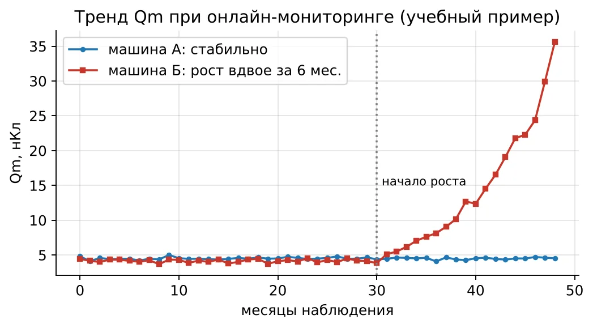
Рис. 12. Тренд Qm при онлайн-мониторинге: стабильная машина и машина с ускоряющимся старением (учебный пример)
В интерактиве. Тренд в игре «Расследование» (вкладка 7, случай 2): год стабильно, затем рост вдвое за полгода — это переход из «Внимания» в «Тревогу».
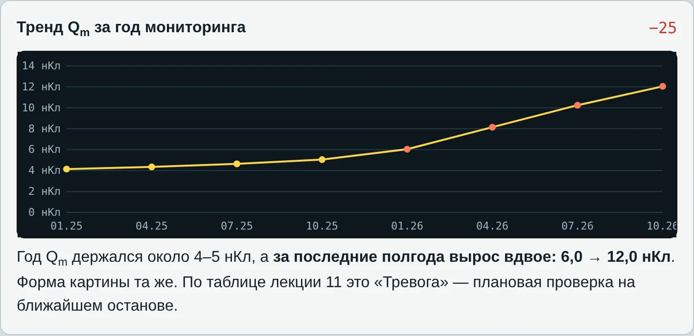
Рис. 13. Интерактив, вкладка 7: тренд Qm двигателя водоотлива
| Ситуация | Признак | Решение |
|---|---|---|
| Норма | Qm стабилен, картина не меняется, на уровне однотипных машин | Плановое наблюдение |
| Внимание | Рост Qm заметен, картина та же | Учащённые измерения, сравнение фаз и машин |
| Тревога | Qm растёт примерно вдвое за полгода или появилась сильная асимметрия | Плановая проверка на ближайшем останове |
| Срочно | Резкий скачок, новые крупные импульсы, плавающий потенциал в масле | Вывод из работы, обследование |
Пороги «вдвое за полгода» — ориентир из практики, а не норма. Каждая служба диагностики задаёт свои пороги по опыту конкретного парка машин.
10. Случаи с объектов
Во вкладке «Диагност» интерактива разобраны 8 случаев. Их удобно использовать как устный разбор в конце лекции:
| № | Объект | Картина | Решение |
|---|---|---|---|
| 1 | Кабель 10 кВ после монтажа муфты, 300 пКл | Поверхностный разряд | Локализовать, перемонтировать муфту |
| 2 | Двигатель 6 кВ насоса, капремонт | Пазовые разряды | Переклиновка, ремонт покрытия |
| 3 | Гидрогенератор 10,5 кВ, онлайн, 4 года | Внутренние разряды, стабильно | Продолжать наблюдение |
| 4 | Сухой трансформатор, приёмка, 60 пКл | Поры литья | Брак обмотки |
| 5 | КРУ 6 кВ, треск при испытании | Корона на острие под напряжением | Скруглить кромку |
| 6 | Подстанция у выпрямителя | Помеха, есть без напряжения | Стробирование, фильтры |
| 7 | Трансформатор напряжения после ремонта | Плавающий потенциал | Восстановить контакт экрана |
| 8 | Двигатель, синхронизация от другой фазы | Поры, сдвиг 120° | Правильная синхронизация |
В интерактиве. Вкладка 4 «Диагност»: студент видит только объект, легенду и PRPD-картину, выбирает источник и решение и сразу получает разбор.
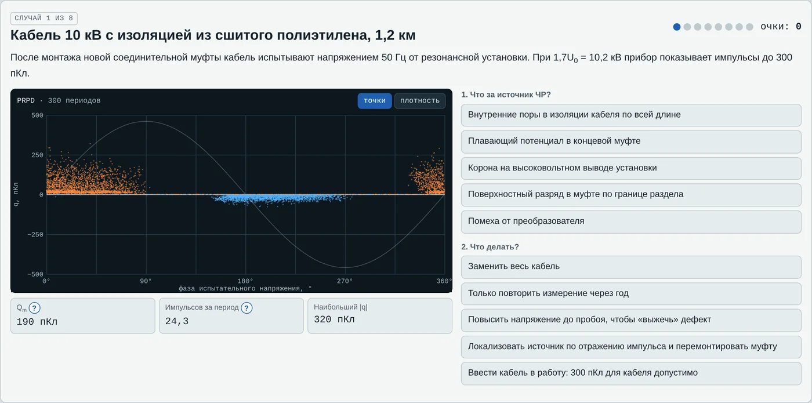
Рис. 14. Интерактив, вкладка 4 «Диагност»: случай с объекта
Вопросы для самопроверки
Что откладывают по осям PRPD-диаграммы и откуда прибор берёт фазу?
Почему облака поры стоят на подъёмах полуволн?
Почему при росте напряжения облака начинаются раньше нуля?
Чем отличаются картины короны на высоковольтном и на заземлённом острие?
Как отличить плавающий потенциал от поры?
Как за одну минуту проверить, что картина — помеха, а не ЧР?
Что произойдёт с картиной, если синхронизацию взять от другой фазы?
Что такое Qm и почему его, а не наибольший импульс, используют для трендов?
Почему у машин важнее тренд, а у кабелей — абсолютное значение?
Почему классическая PRPD плохо подходит для двигателей, питаемых от ПЧ?
Литература
Важов В. Ф., Лавринович В. А. Техника высоких напряжений: учебник. — Томск: Изд-во ТПУ, 2014.
ГОСТ Р 55191-2012 (МЭК 60270:2000). Методы испытаний высоким напряжением. Измерения частичных разрядов.
IEC TS 60034-27-1:2018, IEC TS 60034-27-2:2012. Partial discharge measurements on the stator winding insulation of rotating electrical machines.
Kreuger F. H. Partial Discharge Detection in High-Voltage Equipment. — London: Butterworths, 1989.
CIGRE Technical Brochure 676. Partial discharges in transformers. — 2017.